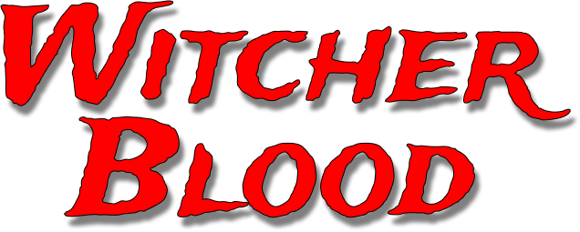
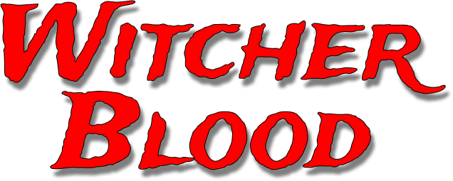

Draco, aderindo às crenças de sua família, pensa que os nascidos trouxas não são bruxos, quando os descreve de forma depreciativa como sangues ruins, devendo ter uma educação mágica negada.
Essa aventura o levará por questões sobre esse personagem fantástico.
E aí, tá preparado!!!
Responder